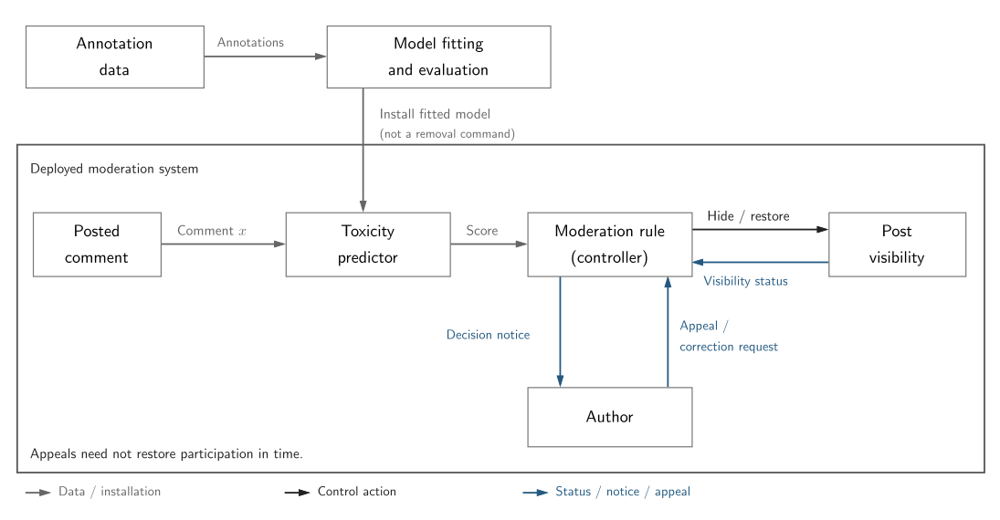

Module 2: Data as Specification
Recall the early notes where a crowd-sourced dataset was procured to train a toxicity predictor. We looked at how a moderation rule could affect visibility and determine the outcomes of user appeals. In the current module we have considered generalization and robustness and why neither alone is sufficient to claim the data specifies the intended task. Now we will examine how development decisions about the dataset can produce shortcuts, such as a spurious correlation between dialect and toxicity.

Development supplies a fitted predictor; the score does not itself remove a post. The moderation rule controls visibility. Appeals provide feedback, but restoration may come too late to preserve participation. This simplified diagram leaves the data-production decisions to be examined below.
Annotators with attitudes
Who makes the dataset? That's the basic question we consider in this note. We tell the story through three sources. In the toxicity detector system we had considered, the platform's goal was to remove targeted abuse while allowing other comments to pass through the filter unflagged. A predictor that used dialect as a proxy for toxicity could contribute to a potential harm \(L_T\): speakers lose timely participation because their nominally allowed posts are removed.
In Annotators with Attitudes, Sap et al. measure perceived offensiveness of online comments and its associations with dialect, prejudice, and vulgarity [1]. They focus on comments exhibiting African American English (AAE), racism, or vulgarity.
This paper suggests a mechanism upstream of model fitting: the composition of the annotator pool can embed spurious associations directly into the training labels. In our original crowd-sourced predictor example, we focused on shortcut learning as the source of spurious correlation between dialect and toxicity. Here the authors study annotator attitudes and their associations with annotations. For example, higher scores on their racist-belief scale were associated with lower toxicity ratings for anti-Black posts and higher toxicity ratings for AAE posts.
This paper tells us about the annotators, but we can also ask about the researchers' own choices and positionality. How were the experiment design, constructs, method of AAE identification, and interpretation of results selected? For example, in the paper's breadth-of-posts study, 173 annotators label 571 tweets. Consider two design decisions:
- Each attitude dimension is measured using a single questionnaire item selected based on the earlier breadth-of-annotators study.
- The study assigns two White conservatives, two White liberals, and two Black annotators per post.
White annotators are therefore politically differentiated in the assignment scheme while Black annotators are not. Moreover, the item used to measure each attitude is selected based on a previous component of the study. These decisions influence which comparisons the design supports and raise questions about the reliability and scope of the attitude measurements.
Datasheets for datasets
The attitudes paper raises the next natural question: what should we know about how a dataset was made? Pointing out study decisions is not itself a critique of the study. In fact, the authors were transparent about many of these decisions.
In Datasheets for Datasets Gebru et al. propose documentation as a way to make otherwise underspecified researcher decisions acquire traceable provenance [2]. Here are some of the components they recommend:
- Motivation or purpose for the dataset
- Dataset composition
- Collection process
- Intended use-cases
For our platform moderation example, the argument presented in this paper would motivate expanding our system boundary. Instead of conceptualizing data production as a black box, we would ask which decisions and assumptions flowed into its construction. Such documentation can help identify where to investigate; it does not by itself establish that a dataset or its downstream use is safe.
Mitigating data harms with selection mitigations
Suppose we know who made the dataset and the relevant information about how it was made. What happens next when we deliberately engineer data to control downstream predictor behavior?
OpenAI's DALL·E 2 Pre-Training Mitigations gives one perspective on how we can trace intervention and remediation [3]. The report describes filtering sexual and violent imagery from the training data to reduce problematic outputs. This filtering also had an unintended side effect: it reduced caption-word frequencies for "woman" by 14%, versus 6% for "man," suggesting amplified gender skew in the dataset composition. The report then describes reweighting the filtered data to address filtering-induced bias. Filtering and reweighting are distinct interventions: a control aimed at one problem can introduce another, motivating a further mitigation.
Development controls such as inclusion, labels, and weights are choices \(c\) that help specify the training objective:
In moderation, \(i\) could index annotations, \(I_c\) identifies retained annotations, and \(y_i^{(c)}\) is the label used under choice \(c\). The weights \(w_i^{(c)}\) are nonnegative, with a positive total weight, and help shape which model is selected.
Notice that researchers choose \(c\) and then fitting chooses parameters for the model. Yet, a safety intervention may change the training distribution. It is not enough merely to change the objective. We must interrogate what is being changed, what is intended to stay invariant across that change, and specify a procedure connecting the researcher choice to observable evidence of the intended invariance. In the image-model and moderation contexts, that might mean checking whether filtering or reweighting reduces one measured problem while suppressing subgroup representation or preserving a harmful shortcut.
Synthesis: a researcher choice becomes a harm scenario
Let's return to Annotators with Attitudes. In the breadth-of-posts study, each attitude is measured using a single questionnaire item. Appendix D.3 describes selecting a post category and one item per attitude using correlations with first-study toxicity ratings. This does not imply an invalid design, nor does item selection alone establish predictive underspecification. Let's extend the example into a hypothetical harm scenario, keeping its assumptions separate from the paper's findings.
Where is the underspecification? Under a fixed baseline development policy \(c_0\), assume repeated training runs yield both context-sensitive and dialect-shortcut predictors with statistically indistinguishable validation performance. Suppose validation omits non-abusive AAE, leaving their different treatments of allowed speech unresolved by the available evaluation. These are assumptions for our scenario, not reported findings of Sap et al.
Now select within that underspecified region. Suppose a moderation pilot confounds dialect with toxicity. The development team selects a single strongly correlating questionnaire item, treats it as an annotator reliability measure, and upweights high scorers. Suppose these annotators tend to rate dialect itself as toxic. Changing \(c_0\) to \(c_1\) increases the weights \(w_i^{(c)}\) of their annotations and can favor a dialect-shortcut predictor. Assume that this predictor is selected and still passes the unchanged validation check. The original validation equivalence was under \(c_0\); changing \(c\) changes the training objective, not the adequacy of the validation check.
The predictor is deployed and flags an AAE post that the intended moderation policy permits. The controller, here the algorithmic moderation rule, issues a removal instruction. The platform enters a hazardous state \(H_T\): an allowed post is hidden while timely correction is unavailable. An appeal restores it only after the platform conversation has moved on. The participant realizes a harm \(L_T\): loss of timely participation because an allowed post was removed. Repetition produces systematic exclusion.
From this scenario, we would try to derive requirements and safety constraints. Here is one potential constraint \(SC_T\): prevent or correct erroneous removals before the participation window closes. One development-time check is to evaluate non-abusive AAE against the intended policy before and after reweighting, comparing predictors that were indistinguishable on the original validation check. Testing alone does not prevent a removal; the results must inform a selection or deployment decision. More directly related to the realized harm is a check of correction timeliness using removal, appeal, and restoration logs, against an explicitly defined participation window.
Conclusion
Researcher choices can influence data in ways that are hard to detect within the development pipeline. Available evaluations may leave the safety-relevant differences among well-performing models unresolved, while the provenance of selection decisions is difficult to trace. Documenting decisions from the start of data collection to the intended end use can help establish transparency and identify potentially consequential sources of underspecification before model behavior contributes to realized harm.
References
[1] Sap, Maarten, et al. "Annotators with Attitudes: How Annotator Beliefs and Identities Bias Toxic Language Detection." Proceedings of the 2022 Conference of the North American Chapter of the Association for Computational Linguistics: Human Language Technologies. 2022.
[2] Gebru, Timnit, et al. "Datasheets for datasets." Communications of the ACM 64.12 (2021): 86-92.
[3] OpenAI. “DALL·E 2 Pre-Training Mitigations.” OpenAI, 28 June 2022.